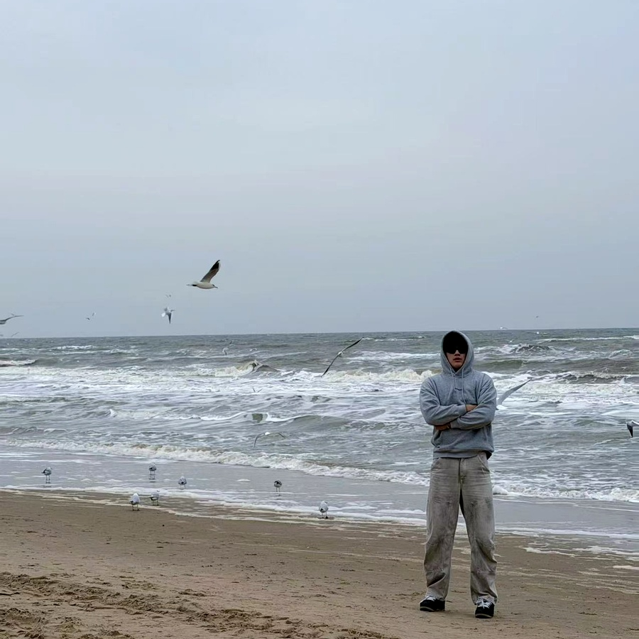

Conghao Li
Undergraduate student, researcher and explorer of space‑air‑ground networks
I’m currently pursuing a B.E. in Internet of Things Engineering at Beijing University of Posts and Telecommunications, with a dual‑degree programme in collaboration with Queen Mary University of London. My research interests span non‑terrestrial networks, LEO satellite communications, semantic communications, edge intelligence and AI‑driven resource allocation.
Education & Overview
B.E. in Internet of Things Engineering, Beijing University of Posts and Telecommunications (International School), expected graduation June 2027.
Dual degree programme with Queen Mary University of London. Current GPA: 3.7/4.0.
Selected coursework includes Advanced Mathematics, Discrete Mathematics, Data Structures, Digital Circuit Design and Machine Learning. These courses provide a solid foundation for my interdisciplinary research combining communications and artificial intelligence.
Beyond the Classroom
When I’m not writing code or analysing satellite constellations, you’re likely to find me on a court — I enjoy playing basketball and table tennis. These activities help me stay focused and energised, fostering the teamwork and agility essential for research.
Honours & Awards
- Honorable Mention (H Award), Mathematical Contest in Modeling / Interdisciplinary Contest in Modeling, Jan 2025.
- Third Prize, National College Students Mathematics Competition (Beijing Division), Nov 2025.
- University‑level Scholarship, Beijing University of Posts and Telecommunications.